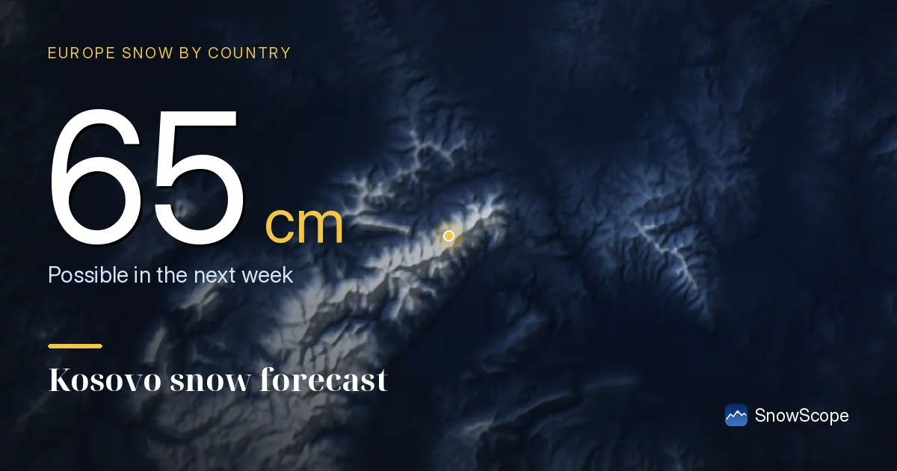

Kosovo snow forecast: 65 cm possible in the next week
Brezovica is Kosovo's only ski resort, and snow is on its way. The forecast shows up to 65 cm across the next week, with the heaviest fall expected on 28 November.
See the live snow forecast for Brezovica in the SnowScope appSnow depth, powder alerts and the 3D map, free.
Major snow event ahead
A significant snowstorm is moving toward Kosovo. The peak will come on 28 November, when we expect 19 cm at high altitude.
This is a forecast, which estimates conditions across the mountains. The actual amount will depend on the exact track of the system and how conditions unfold.
| Resort | Snow depth | New snow, 72 h | Coming, next days | Top |
|---|---|---|---|---|
| Brezovica | 0 cm | 7 cm | 16 cm | 2,261 m |

Where the snow will fall
The Accursed Mountains and the Šar Mountains will see the heaviest snow. The Accursed Mountains received 15 cm in the past 72 hours and lie in the path of the incoming system. Higher ground above 2000 m will catch most of the new snow.
At Brezovica (2261 m), SnowScope shows 7 cm fell in the last 72 hours and 16 cm is forecast for the next 3 days. Snow at the resort level has been sparse so far this season, but this event should change that.
Snow cover is growing
Snow coverage across Kosovo has jumped sharply. That is a gain of 60 km² in just 24 hours, driven by the system now arriving.
Early-season snow often melts quickly if temperatures rise. The mountains above 2000 m hold snow longest. Our data shows only 2 per cent of Kosovo's region is snow-covered now, but this will grow as the storm develops.
What we see from satellites
The snow map on 22 November shows sparse white cover in the highest zones. Snow is thin and patchy below 2000 m.
By contrast, the trend over the past week shows a sharp recovery. Snow coverage fell to just 20 km² on 19 November but has rebounded to 130 km² as fresh systems moved in. The incoming event should sustain and expand this cover.
Timing and confidence
Snow will arrive on 23 November and intensify through the week. After that event, we expect lighter snow or dry spells.
Forecasts can still shift, especially for the exact amounts and timing. Early-season snow is also prone to quick melt if temperatures warm. Watch official weather forecasts and avalanche bulletins if you plan to leave marked terrain.
Albania and North Macedonia also in line
Brezovica sits in a snow corridor shared with its neighbours. Albania's leading resort, Ski Pista Bigëll, faces up to 69 cm in the next 7 days. North Macedonia's main resort, Скијачки центар Попова шапка, is forecast to see 47 cm. All three countries are about to see substantial accumulation.
Tips for skiers
- Watch the forecast for 28 November: that is when the heaviest snow arrives. Plan your trips to Brezovica for after that date if you want the deepest fresh snow.
- Above 2000 m is where snow will stick longest and accumulate fastest. Lower elevations may see it melt or turn to rain.
- Early snow is thin and often covers rocks. Check avalanche bulletins and use caution off marked runs until the base builds.
- This is a forecast, not a guarantee. Actual totals may differ if the storm track shifts or weakens. Follow updates from your meteorological service.
- Use SnowScope's map to track snow depth and coverage as the system moves through.
About these numbers
Resort snow depths are the deepest snow on the resort's upper slopes on the date shown; they are estimates for an area, not a measurement at one point. Forecasts can change. Always read the official avalanche bulletin before going off-piste.
Cite this report
For research, teaching or the press: the numbers and charts are free to reuse under CC BY 4.0 with this citation.
SnowScope (2026), Kosovo snow forecast: 65 cm possible in the next week, https://snowscope.app/blog/en/2026/11/kosovo-snow-on-the-way-22-november-2026.html, accessed 2026-11-22
SnowScope (Atlas Labs). (2026, November 22). Kosovo snow forecast: 65 cm possible in the next week. SnowScope snow reports. https://snowscope.app/blog/en/2026/11/kosovo-snow-on-the-way-22-november-2026.html
BibTeX
@misc{snowscope2026kosovosnowontheway22nove,
author = {{SnowScope (Atlas Labs)}},
title = {Kosovo snow forecast: 65 cm possible in the next week},
year = {2026},
month = nov,
howpublished = {\url{https://snowscope.app/blog/en/2026/11/kosovo-snow-on-the-way-22-november-2026.html}},
note = {Published 2026-11-22 20:05 UTC; accessed 2026-11-22}
}· CC BY 4.0 · Methods, data and tools →
Brezovica: snow and temperature by height, this winter vs last (tools) →
Follow Brezovica
Free: a message when fresh snow is coming, and the forecast every morning.
More snow reports

Only Borovets and Bansko have a trace of snow at the top today, 2 cm each. A week ago Borovets had 11 cm. Day by day, and the one snowy day in the forecast.

From 13 to 19 November 2026 Slovenia got the most snow and kept it; Serbia and Croatia had a deep but short white weekend; Montenegro only on Durmitor; Bulgaria almost none. The ranking, with links to each country report.

Snow is falling on Slovenia's ski mountains today: about 37 cm on Kanin and 21 cm on Krvavec. Where the snow lies, how it compares with past winters, and the next snowy day.